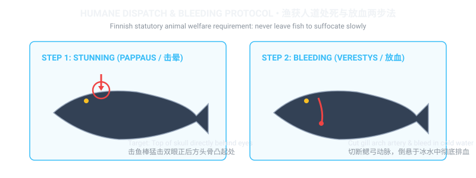

🐟 Humane Dispatch Protocol: Pappaus & Verestys Diagram
Finnish animal welfare and fishing regulations mandate that any fish kept for the table must be dispatched immediately and humanely. Leaving fish to suffocate slowly on dry ground or in a bucket is prohibited.

🍲 Authentic Finnish Creamy Salmon Soup (Lohikeitto)
The crown jewel of Finnish home cooking. Rich, aromatic, comforting, and perfect with dark rye bread and salted butter.